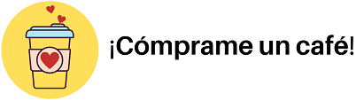

¿Qué otras cosas Hace LlamaStocks?
LlamaStocks busca transparentar información a través del web-scraping para que cada usuario le de valor. Primero queremos que las funciones mostradas se ejecuten correctamente y, luego podemos pensar en más. Esperamos les sea de gran ayuda. Si desean, pueden donar con el botón de abajo para comprarnos un café.
Muchas gracias.
LlamaStocks